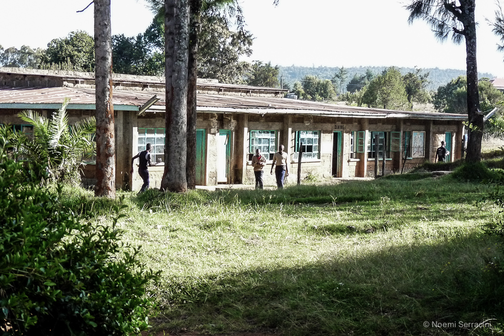

Home / Partners
Built by Rotary, carried by three Italian organisations and one British charity
The home has been supported by a small number of organisations for most of its life. This is who they are and what each one did.
Built by Rotary
Rotary District 2030, in Piedmont, Liguria and Valle d'Aosta, raised about 450,000 euros in the early 2000s for the dormitories, under its governor Sebastiano Cocuzza. Rotaract clubs made the project their national one. The nursery, the students' residence and a respirator for the health centre came from individual members.
Later the district funded the solar panels and the rebuilt irrigation, and the scholarships for school leavers. Rotary clubs in Turin Castello, Auxerre and Alzenau, with InsiemeperDonare, paid for the minibus in 2020.
That ten year agreement ended in November.
Who supports the home now
- Ruota AmicaHandles donations for the Casa Maria project, which is what the home is called in Italy.
- InsiemeperDonareTwenty years in Ndaragwa: schooling, the minibus, structures at the home and in the village.
- Nati per LottareSchool fees for around forty children through its friends of Gabriella group, and basic goods for years.
- Esharelife FoundationBritish charity funding projects at the home, and the clearest English account of it anywhere.
- Ndaragwa Catholic ParishFounded the home in 1993 and still holds it as its own work.
- Ndaragwa Health CentreTesting, treatment and nutrition training, alongside the home's own clinic costs.
Reading about the home elsewhere
These are the published sources this site was built from. They are worth reading if you want the home described by someone other than the home.
- Rotary, the Casa Maria projectPDF, 2024
- Esharelife Foundation, Baldo Children's HomeArticle, UK charity
- Nati per Lottare, the Baldo projectIn Italian
- InsiemeperDonare, who they areIn Italian
If your parish, company or trust would like to be added to this page, write to baldochildrenshome@gmail.com.
Partnership, not a one-off
School fees arrive three times a year whether or not there was a collection that month.